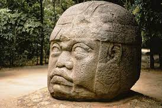
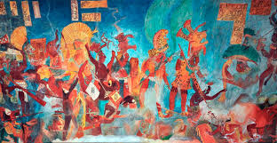
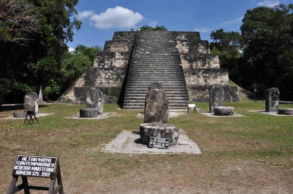

Arte Pré-Colombiana
História
A arte pré-colombiana abrange as expressões culturais das civilizações da América antes da chegada de Cristóvão Colombo em 1492. Esse período é marcado por uma diversidade rica, incluindo as culturas Olmeca, Maia, Asteca e Inca, que se destacaram por suas esculturas, cerâmicas e arquitetura. As obras refletiam tanto aspectos cotidianos quanto religiosos, frequentemente utilizando materiais como pedra, ouro e cerâmica. A arte não apenas servia como forma de expressão estética, mas também era uma ferramenta de comunicação de crenças e hierarquias sociais. Através de sua evolução, a arte pré-colombiana oferece uma janela vital para entender a complexidade das sociedades indígenas antes da colonização.
Artistas
Na arte pré-colombiana, a noção de "artista" pode ser um pouco diferente do que entendemos hoje. Muitos criadores não eram reconhecidos como indivíduos autônomos, mas sim como parte de uma tradição coletiva, onde as habilidades eram transmitidas de geração em geração. No entanto, algumas culturas destacaram figuras que se sobressaíram em suas práticas artísticas.
Olmecas
Embora os Olmecas não tenham deixado registros de artistas individuais, as suas enormes cabeças esculpidas em basalto são atribuídas a mestres escultores. Esses artistas eram altamente respeitados por suas habilidades, e as obras refletem um profundo conhecimento de proporções e detalhes. As cabeças, que podem chegar a mais de três metros de altura, mostram características faciais estilizadas que podem ter representado líderes ou deidades.
Maias
Os Maias, por outro lado, tinham uma produção artística mais diversificada e complexa. Pintores e escultores em cidades como Tikal e Palenque eram altamente valorizados. Os artistas que criavam murais em templos, como os de Bonampak, deixaram uma marca indelével, registrando rituais e eventos históricos. Os códices, que eram livros de papel feito de casca de árvore, também foram criados por artistas que mesclavam texto e ilustração, demonstrando habilidades gráficas e narrativas.
Astecas
Na cultura asteca, a arte estava profundamente ligada ao poder político e religioso. Escultores e ourives eram fundamentais para a criação de objetos que simbolizavam a força do império. A produção de esculturas para os templos, como as que representavam os deuses Tezcatlipoca e Huitzilopochtli, envolvia uma equipe de artesãos, mas figuras individuais provavelmente se destacavam pelo seu talento. O artista asteca Xólotl é uma figura conhecida, embora muitos dos seus contemporâneos permaneçam anônimos.
Incas
Os incas tinham uma tradição artística altamente organizada, com diferentes especializações. Artistas que trabalhavam em tecidos, cerâmicas e escultura eram essenciais para a cultura inca. Os mestres tecelões, por exemplo, criavam complexos padrões em tecidos de alpaca e lã de lhama, muitas vezes com significados simbólicos. Um dos mais famosos, Titu Cusi Yupanqui, foi um líder inca que também é lembrado por suas contribuições artísticas.
A Coletividade da Arte
É importante notar que, na maioria das civilizações pré-colombianas, a arte era vista como uma atividade coletiva. Grupos de artesãos trabalhavam juntos para criar objetos e monumentos, e muitas vezes as obras eram encomendadas por líderes ou religiosos. Essa abordagem coletiva significa que, embora possamos identificar talentos individuais, a grande maioria da produção artística era uma expressão de uma comunidade ou cultura.
Obras
Cabeças Colossais Olmecas
Estas esculturas gigantes, esculpidas em basalto, podem pesar até 50 toneladas e são encontradas principalmente em San Lorenzo e La Venta. Cada cabeça é única, retratando rostos com características estilizadas que podem representar líderes ou deidades.
Murais de Bonampak
Localizados no México, esses murais maias são famosos por sua rica iconografia e cores vibrantes. Eles retratam cenas de rituais e batalhas, oferecendo um vislumbre da vida política e religiosa maia no século VIII.
Estelas de Tikal
As estelas esculpidas de Tikal são monumentos que celebram eventos históricos e governantes. Decoradas com hieróglifos e imagens, essas estelas fornecem informações valiosas sobre a história e a genealogia da elite maia.
A Pedra do Sol (Calendário Asteca)
Essa famosa escultura asteca, também conhecida como "Calendário Asteca", representa o cosmo e o ciclo do tempo. Com um diâmetro de cerca de 3,6 metros, a pedra é rica em simbolismo e foi descoberta em 1790 em Tenochtitlán.